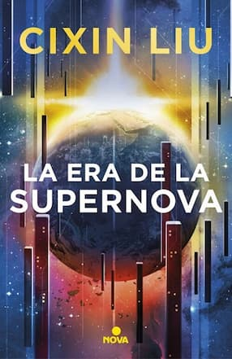
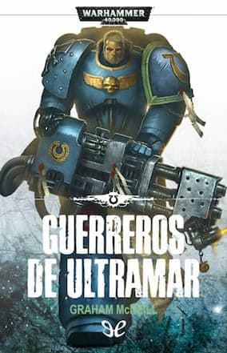
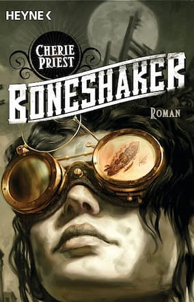

LA ERA DE LA SUPERNOVA
Cixin Liu
Editorial: Nova
Precio : $41.000
Hace ocho años y a ocho años luz de distancia, murió una estrella. Esta noche, una supernova de alta energía finalmente
llegará a la Tierra. El cielo brillará cuando esa nueva estrella florezca y, dentro de un año, todos los adultos mayores de trece años
estarán muertos. Sus cromosomas habrán quedado irreversiblemente dañados. Así comienza la cuenta regresiva hacia un nuevo mundo sin adultos.
Cixin Liu nos invita a interpretar esta novela como una fábula sobre el avance de las nuevas generaciones por un mundo incomprensible para
sus mayores, y sobre el propio estado de la humanidad, que navega sola e infantilizada en el universo, sin un manual de usuario que la guíe.
Comprar

GUERREROS DE ULTRAMAR
Graham McNeil
Editorial: Timun Mas
Precio : $27.000
Los Ultramarines son guerreros altamente disciplinados que han combatido durante diez mil años en los ejercitos del Emperador.
Donde los enemigos de la Humanidad amenacen al Imperio, allí estarán ellos para combatirlos. En esta nueva entrega de la saga Warhammer 40k,
enfrentaran a los tiránidos, quienes viajan de mundo en mundo a través del espacio estelar y lo devoran todo en un inútil intento de saciar
su ansia de materia orgánica. En su camino se encuentra el planeta Tarsis Ultra, donde el capitán Uriel Ventris y su compañía de Ultramarines
se preparan para para destruir la amenaza alienígena.
Comprar
BRIGADA DE LUZ
Kameron Hurley
Editorial: Runas
Precio : $40.000
La Brigada de Luz: así es como se denominan los soldados que luchan contra Marte cuando regresan “distintos” de los frentes de batalla
interplanetarios a los que han sido teletransportados convertidos en luz. Dietz se alista en el ejército corporativo de Tene-Silvia para
vengar a los millones de personas que han muerto a manos de los marcianos. Pero se da cuenta de que sus saltos temporales no coinciden
con los de su pelotón. Y lo que estos saltos cuentan sobre la guerra no es la realidad que informan las corporaciones.
Comprar

BONESHAKER
Cherie Priest
Editorial: Heyne
Precio : $25.000
Durante la guerra civil, Leviticus Blue creó un prototipo capaz de atravesar el hielo de Alaska, donde se rumoreaba que se había
encontrado oro. Nació así la increíble máquina taladradora Boneshaker. Sin embargo, no funcionó adecuadamente y destruyó el centro de Seattle,
provocando un estallido de gas venenoso que convirtió a quienes lo respiraban en muertos vivientes.
Comprar